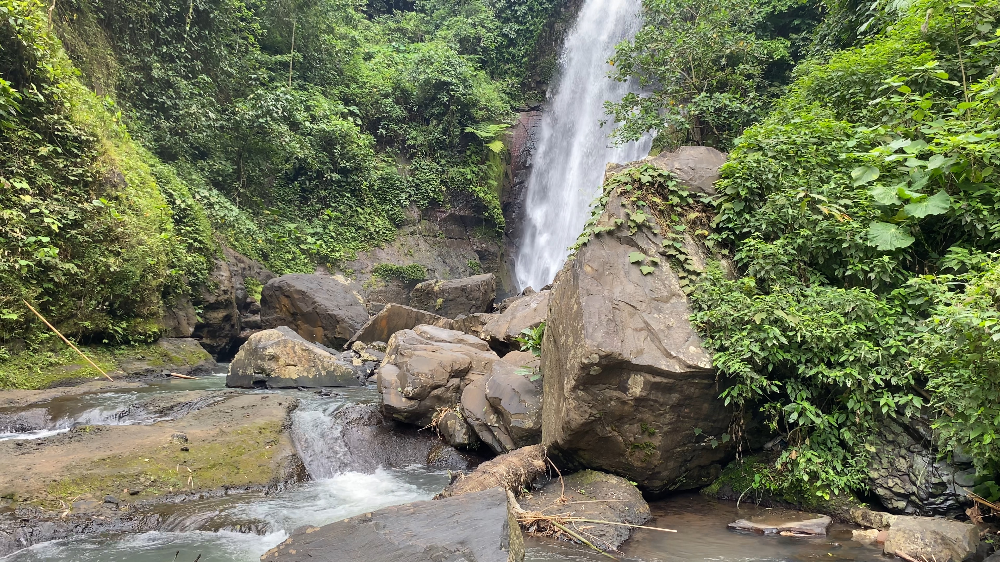
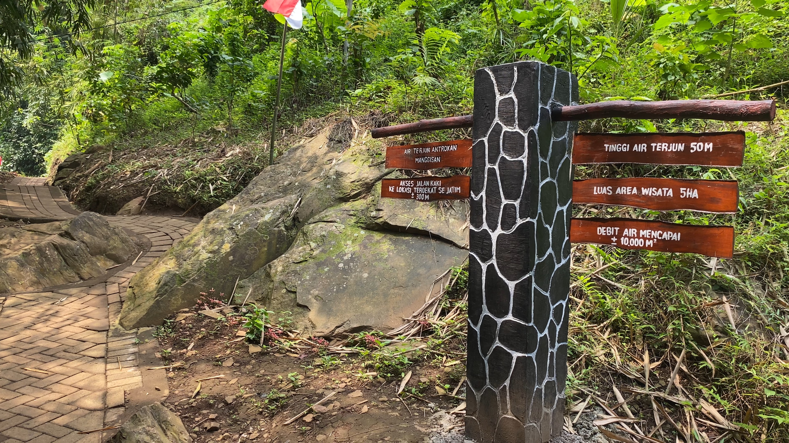
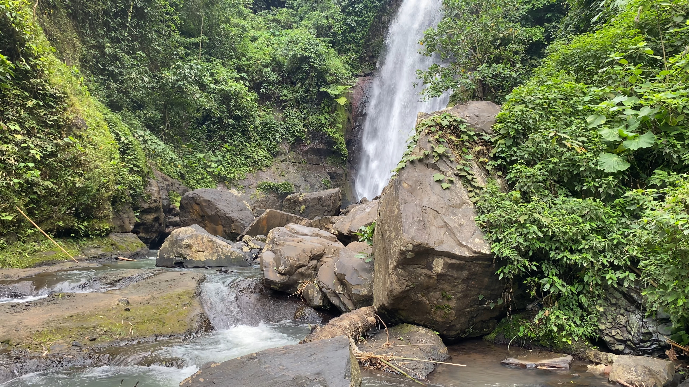
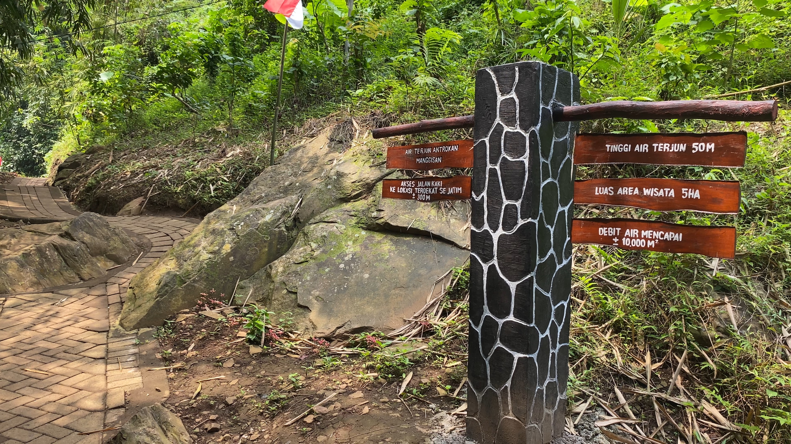

Pesona Lokal Desa Manggisan
Jauh dari keramaian, Air Terjun Antrokan adalah wujud nyata peson lokal Desa Manggisan yang dikelola langsung oleh masyarakat. Perjalanan Anda akan diwarnai oleh pemandangan perkebunan kopi dan sapaan ramah warga sekitar.
Setibanya di lokasi, Anda dapat bersantai di gazebo sambil menikmati suara alam, atau turun langsung merasakan sejuknya air pegunungan. Setiap kunjungan Anda juga secara langsung membantu perekonomian masyarakat pengelola wisata.
Informasi Praktis
Semua yang perlu Anda ketahui sebelum berkunjung.
Akses
Dapat dijangkau dengan kendaraan roda dua melalui jalanan desa yang sudah beraspal.
Fasilitas
Tersedia area parkir, beberapa gazebo untuk beristirahat, dan warung sederhana.
Harga Tiket
Rp 5.000 Per Orang
Jam Buka
Setiap Hari, 07.00 - 17.00 WIB
Galeri Antrokan
Momen-momen indah yang berhasil kami abadikan di surga tersembunyi Desa Manggisan.


Temukan Kami
Gunakan peta di bawah ini untuk mendapatkan arahan menuju lokasi Air Terjun Antrokan.